국뽕 해외반응 영상 따라 만들기 — 저작권 체크리스트 + 대본·편집 메가 프롬프트
2026-11-08 · 급등 신생 국뽕 채널 17개·영상 49편의 화면·자막·설명란을 감사하고, 저작권 위험이 낮은 상위 5편의 대본(자동자막 전문)과 편집(1초 간격 컷·프레임)을 분석했습니다. 법률 자문이 아니며, 위험 판정은 관찰 기반 추정입니다. ← 코리아국뽕한사발 집중 분석
결론 먼저
똑같이 만들 때 1~4단계 (저작권 안전형)
- 이슈 당일~3일 안의 외국 매체·외국인 발언 3~10개 확보(매체·국적·직함·이름·URL 기록)
- 방송사 프로그램(WTO姐妹會 같은 TV 예능)·스포츠 중계·드라마는 허락 없이 쓰지 않기(Content ID 등록 가능성 큼)
- 쓸 영상은 짧은 인용 위주로: CC BY, 기관 공개 영상, 원작자 허락받은 브이로그
- 내레이터의 해설·비유·숫자 환산이 60% 이상
- 훅 7단계(0~60초), 본론 블록 3~8개, 한계 1단락, 질문형 엔딩
- 칭찬은 외국인이, 해석은 내가
- 8분 30초 = 내레이션 약 2,700자
- 화면 60% 이상 자체 제작(AI 일러스트·지도·카드)
- 외국 원음 한 번 20초 이하, 같은 원본 합계 60초 이하, 전체 30% 이하
- 클립마다 좌상단 출처 라벨
- 분당 약 20컷, 노랑=외국인 / 흰색=내레이션 자막
- 아래 체크리스트 ①~⑦ 통과 확인
- 설명란: 원본 URL 전부 + 허락·라이선스 내역 + AI 음성이면 고지
- 제목: 인용+숫자+외국 주체+"진짜 이유"
- 업로드 후 Studio에서 저작권 소유권 주장 알림 확인, 걸리면 해당 구간 삭제·교체
저작권 Q&A
Q1. 저 대만 영상의 저작권은 어디에 있나?
프로그램 영상과 음성은 방송사·제작사(八大電視, 《WTO姐妹會》) 쪽에 있습니다. 출연자의 얼굴·목소리에는 초상권·퍼블리시티 문제도 따로 있습니다. 원본 회차는 아래와 같습니다. 원본은 공식 채널에서 시청하는 것이 정상 경로입니다. 재가공해 쓰려면 방송사 라이선스(허락)가 필요하고, 유튜브 약관상 공식 기능 외의 다운로드는 허용되지 않습니다.
| 코리아국뽕한사발 영상 | 원본 회차 (WTO姐妹會 官方頻道) | 비고 |
|---|---|---|
| ltLDmUM7rxs ((대만반응) 한국 남자 깎아내리는 일본패널 한 방에 받아치…) | NxWh1CSZ9gY | 2018-05-09 방송 |
| BGsaApSYHoY ((대만반응) 한국인 뻔뻔하다는 대만 진행자 입 다물게 만드…) | ispOHxHebo0 | 2018-04-10 방송 |
| pxRKZMTLXmg ((대만반응) 한국인 사과 안 한다는 대만 게스트 한마디로 …) | FDWqsYWb3XU | 2019-05-02 방송 |
| -fF-jVlcgM0 ((대만반응) 한국 남자 깎아내리는 패널 앞에서 한 방에 판…) | FRqwKLqZoAU · zXP-FeIwJiE · Opn-5370rJs · aFJAePfURAk | 4개 회차 이어 붙임 |
| mujsSt2s3BQ ((대만 반응) "한국 용접공 연봉 클래스" 낮에만 일하고 …) | lO6mpN8-bo8 | 2026-10-21 방송, 5일 뒤 업로드 |
| h-VD_UAJI9o ((대만반응) 한국 깎아내리는 외국패널에 역공 한 방 먹이는…) | 5mHvjmgC6VM | 2026-08-03 방송(패널 대조 추정) |
| phFB016Q528 ((대만반응) 한국인 사과 안 한다는 일본패널 한 방에 기강…) | 찾지 못함 | - |
Q2. 그런데 저 채널은 왜 아직 안 걸렸나? (추정)
- 수익 창출 전이라 재사용 콘텐츠 심사를 아직 안 받았습니다. 재사용 콘텐츠 정책은 YouTube 파트너 프로그램(YPP) 참여·신청 채널의 수익 창출 심사 기준입니다. 구독자 75명, 개설 12일 채널은 아직 이 심사 대상이 아닙니다. 1천 명을 넘겨 신청하는 순간 심사를 받는데, 원본에 자막만 입힌 형식은 공식 "수익 창출 불가 예시"(좋아하는 프로그램 장면에 설명을 거의 추가하지 않은 클립)에 해당합니다.
- Content ID는 권리자가 설정한 만큼만 작동합니다. 권리자가 차단 대신 "수익 가져가기·추적"을 고르면 영상은 그대로 남습니다(이 경우 광고 수익은 원본 방송사로 갑니다). 옛 회차는 등록 범위 밖일 수도 있습니다(추정).
- 수동 신고는 권리자가 발견해야 들어옵니다. 개설 2주 채널은 아직 눈에 띄지 않았을 수 있습니다. 신고가 들어오면 저작권 경고가 쌓이고, 경고 3회면 채널이 해지됩니다.
- 결론적으로 "안 걸리는 형식"이 아니라 "아직 안 걸린 상태"입니다. 같은 프로그램을 쓰는 "들어봐"도 위험 높음입니다.
Q3. 원본을 통째로 가져와도 번역하고 내 의견·교육 내용을 넣으면 괜찮나?
- 유튜브 수익(재사용 정책): "원본에 대한 내 의견을 밝히는 리액션", "줄거리와 해설을 더한 편집물"은 수익 창출이 가능한 예시입니다. 다만 해설이 실질적이어야 하고, 원본을 최소한으로만 바꾸면 위반입니다. 원작자 허락을 받아도 이 정책은 따로 적용됩니다.
- 저작권(Content ID·신고): 재사용 정책과 별개입니다. "출처 표기", "저작권 침해 의도 없음" 문구, "오락용"이라는 명시는 면책이 되지 않습니다(유튜브 공정 사용 안내). 원본을 변형하지 않은 복사본은 출처를 밝혀도 공정 사용이 아닙니다.
- 한국 저작권법
- 제28조 인용이 인정되려면 내 콘텐츠가 주(主)이고 인용한 원본이 종(從)인 관계여야 합니다(대법원 2013. 2. 15. 선고 2011도5835 판결, 2024. 7. 11. 선고 2021다272001 판결).
- 제35조의5 공정이용은 네 가지를 함께 따집니다: 이용 목적·성격(영리성은 불리), 저작물 종류, 사용한 분량과 중요도, 원본 시장을 대체하는지.
- 원본 회차를 통째로 쓰고 번역만 붙이면 "종"이 아니라 "주"가 되고 원본 시청을 대체하므로 불리합니다.
- 그래서 실무 기준(법적 보장 아님, 이번 상위 채널 관찰에서 뽑은 안전선): 자체 해설 60% 이상 / 원음 한 번 20초 이하 / 같은 원본 합계 60초 이하 / 한 원본에 영상 전체를 의존하지 않기 / TV 방송·중계·드라마는 허락 없이 쓰지 않기 / 설명란에 출처와 허락 내역.
근거: YouTube 채널 수익 창출 정책(재사용된 콘텐츠) · YouTube 공정 사용 정책 · 저작권법 제35조의5 · 대법원 2021다272001 · 리액션 영상 저작권(디지털데일리)
채널별 저작권·재사용 체크리스트 (상위·신생 17개 채널)
①~⑦은 위 실무 기준입니다. ✓ 지킴(초록) / △ 일부(노랑) / ✗ 어김(빨강). 수치는 화면·자막·설명란 관찰로 낸 추정치입니다. 실제 신고·수익 상태는 외부에서 확인할 수 없습니다(UNKNOWN).
| 채널 | 최고 조회 | ①자체 해설 50%↑ | ②원음 한 번 30초↓ | ③단일 원본 의존 X | ④방송사 영상 X | ⑤출처 표기 | ⑥AI 음성 고지 | ⑦기만 없음 | 재사용 위험 | 저작권 위험 | 판정 |
|---|---|---|---|---|---|---|---|---|---|---|---|
| 코리아국뽕한사발 TOP1 | 13.9만 | ✗ 5% | ✗ 1~2분 | ✗ 한 회차 | ✗ 八大電視 | △ 일부만 | - | ✓ | 높음 | 높음 | 위험 |
| 들어봐 TOP5 | 28.9만 | ✗ 2% | ✗ 회차 통째 | ✗ 한 회차 | ✗ WTO姐妹會 | △ 프로그램명만 | ✓ Supertonic 명시 | ✓ | 높음 | 높음 | 위험 |
| 한국이처음이라서 TOP3 | 79.5만 | ✗ 6~12% | ✗ 수분 연속 | ✗ 브이로그 1편 | ✓ | ✓ 설명란 | - | ✓ | 높음 | 높음 | 위험 |
| 한국이 좋아서 TOP2 | 39.6만 | ✗ 3~8% | ✗ 77~270초 | ✗ 브이로그 1편 | ✓ | ✓ 화면+설명란 | △ 미확인 | ✓ | 높음 | 중간 | 위험 |
| 한국최고 신생 | 5.1만 | △ 30~35% | ✗ 40~60초 | △ | △ BBC | ✗ 설명란 없음 | - | ✓ | 높음 | 높음 | 위험 |
| 해외반응 맛집 신생 | 11.6만 | △ 35% | △ 40~60초 | △ | ✗ 경기·일본TV | ✓ | ✓ Gemini TTS 명시 | ✓ | 높음~중간 | 높음~중간 | 주의 |
| 해외반응기자 신생 | 15.4만 | △ 35~45% | △ 30~50초 | △ 모렐 65% | △ 아르헨 TV | ✓ | △ | ✓ | 높음~중간 | 중간 | 주의 |
| 대한관측소 신생 | 6.5만 | △ 35~40% | △ 20~60초 | ✓ | ✗ WTT·SPOTV·SBS | ✓ 가장 상세 | ✓ 명시 | ✓ | 중간 | 중간~높음 | 주의 |
| 가슴웅장 코리아 신생 | 6.4만 | △ 45~50% | △ 20~60초 | ✓ | ✗ 경기 중계 | ✓ | ✓ 명시 | ✓ | 중간 | 중간~높음 | 주의 |
| 세상은 왜 TOP4 | 28.0만 | △ 20~45% | △ 15~50초 | ✓ 여러 소스 | △ 대만 뉴스 1편 | ✓ 클립마다 라벨 | ✓ 명시 | ✓ | 중간 | 중간 | 보통 |
| 국뽕특파원 신생 | 24.4만 | ✓ 50~55% | △ 20~45초 | ✓ | ✓ 기관·CC 영상 | ✓ | △ 미확인 | ✓ | 중간 | 중간 | 보통 |
| 세계열광 신생 | 43.5만 | ✓ 50% | △ 30~45초 | ✓ | △ 외국 방송 30% | ✓ 클립마다 라벨 | △ 미확인 | ✓ | 중간 | 중간 | 보통 |
| 글로벌공감TV 신생 | 36.5만 | ✓ 60% | △ 15~50초 | ✓ | △ KBS·연합 일부 | ✓ URL 전부 | △ 미확인 | ✓ | 중간 | 중간 | 보통 |
| 국격발견 신생 | 6.9만 | ✓ 70~75% | △ 최장 60~90초 1곳 | ✓ | △ | ✓ 96건 목록 | △ 미확인 | ✓ | 낮음 | 중간 | 양호 |
| 우아한 경제 신생 | 40.7만 | ✓ 95% | ✓ 외부 클립 0 | ✓ | ✓ | △ 근거 출처 없음 | △ 미확인 | ✓(사실검증 별도) | 낮음 | 낮음 | 가장 안전 |
| KR.해외감동사연 신생 | 7.7만 | ✓ 70%(허구 사연) | ✗ 배경영상 수분 | - | ✓ | ✗ | △ | ✗ 각색 사연+무관 영상 | 높음 | 중간 | 위험 |
| 글로벌 한국탐구 신생 | 147 | ✓ 60%(허구 화자) | ✗ 배경영상 수분 | - | ✓ | ✗ | △ | ✗ 허구 화자+무관 영상 | 높음 | 중간 | 위험(조회도 없음) |
원본 영상은 어느 나라·플랫폼에서 왔나
| 채널 | 원본 나라 | 원본 플랫폼·출처 | 비고 |
|---|---|---|---|
| 코리아국뽕한사발 | 대만 | 八大電視(GTV) 토크쇼 《WTO姐妹會》, 공식 유튜브 @WTOSS | 2018~2019년 옛 회차 + 2026-10-21 방송(5일 뒤 업로드) |
| 들어봐 | 대만 | 같은 《WTO姐妹會》(세트 간판 "WTO SISTER SHOW") | 설명란 "출처: WTO姐妹會", URL 없음 |
| 한국이 좋아서 | 브라질·튀르키예·스웨덴·러시아·스페인어권 | 외국인 유튜브 여행 브이로그(@FilipeFilippo 등), 인스타 핸들 워터마크 일부 | 영상 1편 = 원본 크리에이터 1명 |
| 한국이처음이라서 | 인도·방글라데시 | 유튜브 브이로그 THE INDO TREKKER, Rakib RAZIB | 설명란 크레딧 |
| 세상은 왜 | 대만·미국·호주·일본·태국 | TikTok 골퍼 클립, 유튜브 쇼츠, 대만 TVBS·CTS·PTS 뉴스, NHK WORLD, 해외 브이로그 | AI 음성 명시 |
| 국뽕특파원 | 덴마크·미국·호주·일본 | 외국인 등산 브이로그 + 한국관광공사·VisitSeoul·CC BY 영상 | 화면·설명란 크레딧 |
| 한국최고 | 영국·미국·독일·네덜란드 | 외국인 브이로그·인터뷰, BBC | 설명란 크레딧 없음 |
| 글로벌공감TV | 미국·호주·말레이시아·중국 | TikTok, 유튜브 쇼츠(PPASEGOLF), PUMA 광고, 중국 유튜브·간체 기사, KBS·연합뉴스TV | 설명란 URL 전부 |
| 세계열광 | 튀르키예·독일·일본 | TVNET·TGRT Haber·CNN TÜRK, tagesschau·phoenix·Handelsblatt, 일본 유튜버 | 클립마다 "출처 @" 라벨 |
| 국격발견 | 폴란드·영국 | 폴란드 TV·정부 영상, 한국 육군·업체 홍보, 영국 OTWD 브이로그, 통계기관 | 출처 96건 목록 |
| 가슴웅장 코리아 | 중국 | 중국 유튜버·Bilibili(간체), BWF 중계(중국 유튜버 경유), 신화사 기사 | AI 음성 명시 |
| 해외반응기자 | 일본·아르헨티나 | 일본 야구 유튜버 모렐, 아르헨 Telefe·Crónica TV, TikTok 팬 직캠 | 클립마다 라벨 |
| 해외반응 맛집 | 인도·일본 | BadminTube, India Today Sports, 간사이TV·후지TV 드라마 장면, 일본 유튜버 3명 | Gemini TTS 명시 |
| 대한관측소 | 국제·한국·중국 | WTT 공식 영상, BWF TV, SPOTV, SBS, JTBC, tvN, CGTN, Bilibili 댓글 | 출처 20개+ |
| 우아한 경제 | - | 외부 영상 0%. AI 일러스트 + 고정 캐릭터 | 출처 표기 없음 |
| KR.해외감동사연 / 글로벌 한국탐구 | 홍콩·중화권 / 벨기에·네덜란드(추정) | 무관한 타인 산책·주행 영상 위에 각색 사연 낭독 | 엔딩에 다른 채널명 잔존(추정 복제) |
저작권을 지키면서 상위인 영상 TOP 5 (대본·편집 분석 대상)
| 순위 | 영상 | 채널 | 조회(11/08) | 형식 | 재사용/저작권 위험 |
|---|---|---|---|---|---|
| 1 |  에르도안 방한 해외반응 “한국은 생색 한번 안 냈다” 8년 만에 온 튀르키예 대통령 | 세계열광 | 43.5만 | 뉴스 반응형: 튀르키예 방송 클립 30~35% + 자체 내레이션·통계 카드, 클립마다 출처 라벨 | 중간/중간 |
| 2 |  "5조 7천억짜리 애물단지" 모두가 비웃었던 두산의 인수합병, 15년 뒤 미국 1위 | 우아한 경제 | 40.7만 | 경제 스토리형: 외부 영상 0%, AI 일러스트 + 자체 대본 | 낮음/낮음 |
| 3 |  "이 문자는 반칙 아닙니까?!" 전 세계 언어학자들이 한글에 고개를 숙인 진짜 이유 | 우아한 경제 | 37.1만 | 역사 스토리형: 외부 영상 0%, AI 일러스트 + 자체 대본 | 낮음/낮음 |
| 4 |  울산 동네 골프 레슨을 따라 하는 외국인들 "빠세!" | 빠세골프 해외반응 | 글로벌공감TV | 36.5만 | SNS 반응형: TikTok·쇼츠 클립 + 자체 내레이션 60%, 설명란 URL 전부 | 중간/중간 |
| 5 |  외국인 등산객 73만 명 몰린 한국 산, "서울이 세계 최고의 등산 도시" 감탄 쏟 | 국뽕특파원 | 24.4만 | 브이로그 반응형: 외국인 브이로그 + 관광공사·CC 영상, 자체 내레이션 50~55% | 중간/중간 |
같은 기준으로 가장 안전한 국뽕 반응형은 국격발견(자체 분석 70~75%, 출처 96건, 재사용 위험 낮음)인데 조회는 6.9만으로 낮습니다. "세상은 왜"의 27.9만 영상(8NGiSepWW3c)은 변형도가 높지만 자막이 없어 대본 분석에서 뺐습니다.
대본 분석 → 메가 프롬프트 (왼쪽 분석, 오른쪽 프롬프트)
| 분석한 요소 (근거·수치) | 프롬프트 지시 | 예시 문장 (프롬프트에 그대로 넣기) |
|---|---|---|
| ① 콜드오픈 0~5초 5편 모두 첫 문장이 제목 문장·충격 숫자·외국인 육성 중 하나. 인사는 0:18~0:35 뒤로 미루거나 생략(우아한 경제·글로벌공감TV는 인사 없음). | 첫 문장은 영상에서 가장 센 결과 하나로 시작한다. ① 외국인 발언 인용(큰따옴표) ② 숫자 충돌 ③ 금지어·도발 질문 중 하나. 인사·채널 소개는 30초 이후에 한 줄만. |
|
| ② 정리·규모 5~20초 방금 보여준 장면을 1문장으로 풀고, 규모(국가 나열·세간 평가·권위자)로 판을 키움. 5/5 사용. | 콜드오픈 직후 "방금 본 것이 무엇인지" 한 문장, 이어서 규모를 키우는 한 문장(여러 나라 나열 / "모두가 ~라고 불렀다" / 권위 집단). |
|
| ③ 반전 접속 15~45초 45초 안에 "그런데/더 ~한 건 따로" 1회 이상(5/5). 반전 접속은 5편 합계 63회, 긴 스토리형은 분당 0.8회. | 45초 안에 반전 문장 1개를 반드시 넣고, 본론에서는 1~2분마다 "그런데/근데/정작"으로 방향을 한 번씩 꺾는다. |
|
| ④ 중심 질문 25~45초 What/Why/How 질문 1개로 영상 전체의 답을 약속(5/5). 질문은 0.6~1.6회/분, 퀴즈형 "~아세요?" 후 즉시 자답 79회. | 영상의 중심 질문 1개를 "도대체 왜/어떻게 ~일까요?" 형태로 명시한다. 본론에서는 퀴즈형 질문 → 바로 답 패턴을 분당 1회 안팎. |
|
| ⑤ 약속·로드맵 30~55초 "지금부터 풀어 드릴게요 / 결론부터 말씀드리면 / 이 두 글자만 챙겨 가시면 됩니다 / 차례로 보겠습니다"(5/5). | 시청자가 끝까지 보면 얻는 것 1개를 약속하거나, 3단 목차를 한 문장으로 말한다. |
|
| ⑥ 첫 숫자 35~60초 4/5가 60초 안에 숫자 2개 이상. 숫자는 5편 합계 375회(경제형 분당 8.6, 반응형 1~2). | 60초 안에 숫자 2개 이상. 숫자는 반드시 생활 단위로 한 번 환산한다(사람 수·기간·물건으로). |
|
| ⑦ 오픈루프 45~65초 영상당 4~9개, 최장 19~21분 보류(우아한 경제). 5/5가 60초 안에 명시적 보류. | 제목 문장의 진짜 뜻은 바로 말하지 말고 "조금 뒤에" 보류한다. 본론 블록 끝마다 다음 블록 예고 한 줄. |
|
| ⑧ 본론 블록 구조 본론 69~80%. 블록 60~150초 = 전환 라벨 → 사실·숫자 2~4문장 → 외국인 인용 → 핵심 한 줄 반복 → 1줄 해석 → 예고. | 본론은 번호 매긴 블록 3~8개. 각 블록은 위 6단계 순서를 지키고 90초를 넘기지 않는다. |
|
| ⑨ 외국인·외국 매체 인용 57회. 매체명+국적+직함+이름을 먼저 말하고 "이렇게 말합니다/입을 엽니다" → 원음 → 한다체 한 줄 반복 → 해석. 칭찬의 주어는 항상 외국인. | 인용은 "누가(매체·국적·직함·이름)" → 짧은 원음(20초 이하) → 핵심 한 줄을 한다체로 반복 → "~인 거예요"로 1줄 해석. 칭찬은 내레이터가 하지 않고 외국인이 하게 한다. |
|
| ⑩ 비유 4/5 사용, 24회(스토리형 영상당 10개). "비유하자면 / 상상해 보세요". | 어려운 개념마다 생활 비유 1개("~인 셈이죠"). 30분 스토리형은 8~10개, 10분 반응형은 2~3개. |
|
| ⑪ 감정 1문장 1인칭 감정 13회(뉴스·역사형만). 감정은 인용 직후 1문장, 경제형은 억제. | 감정은 클라이맥스 인용 직후 딱 1문장. "소름/찡/뭉클"은 영상당 3회 이하. 동의 질문형("좀 ~하지 않으세요?")을 섞는다. |
|
| ⑫ 대비 프레임 "우리에겐 당연 ↔ 외국인에겐 놀라움"(5/5). | 한국인에게 익숙한 것을 외국인 눈으로 다시 보게 만드는 대비 문장을 영상당 2~3번. |
|
| ⑬ 솔직한 한계·온도차 4/5. 결론 직전 3~8%. 국뽕 과장을 스스로 덜어 신뢰를 얻음. | 결론 직전에 반드시 한계·반론 1단락. "솔직히 말씀드릴 게 있어요"로 시작해 숫자 하나로 균형을 잡는다. |
|
| ⑭ 결말·CTA 5/5 첫 장면 콜백 + 질문형 CTA, 구독 요청 0/5. 마지막 감정 문장은 "우리"가 주어(4/5). | 마지막 60초: 첫 장면·첫 문장 콜백 → "우리"를 주어로 한 문장 → 경험 공유·선택형 질문 1개. 구독 요청은 넣지 않는다. |
|
| ⑮ 말투(종결어미) 합니다체 454 : 해요체 493 : 한다체 30(5편 합계). 존댓말 100%, 반말 0. 스토리형 50:50, 뉴스반응형 해요체 76%, 앵커형 합니다체 72%. | 사실·연도·금액·인용 도입은 합니다체, 해석·감상·약속·질문은 해요체(~거예요/~거죠/~거든요), 외국인 인용 핵심문만 한다체 단문. |
|
| ⑯ 문장 길이·속도 문장 중앙값 22~29자(전체 26자), 평균 25~31자. 대본 299~403자/분(내레이션만 314~323자/분). 질문 0.6~1.6회/분. | 사실 문장 30~50자 → 해석·펀치 문장 5~15자를 교대. 한 문장 = 한 정보. 내레이션 분당 310~330자(8분 30초면 약 2,700자). |
|
| ⑰ 제목·썸네일 5/5 큰따옴표 인용, 4/5 숫자, 3/5 "진짜 이유", 3/5 외국 주체 명시. 썸네일 2줄(줄당 13~14자). | 제목 = "외국인/외국 매체 인용" + 숫자 + 외국 주체 + "~한 진짜 이유". 썸네일은 2줄, 1줄 인용문(흰·노랑), 2줄 이유(노랑·시안). |
|
대본 메가 프롬프트 (복사해서 사용)
[역할] 너는 40~80대 한국 시청자용 '해외반응·국뽕' 유튜브 롱폼 대본 작가다. 길이 {8분30초 / 12분 / 28분}. 주제: {주제}. 사용할 외국인·외국 매체 발언: {발언 3~10개 + 출처(매체·국적·직함·이름·날짜·URL)}.
[절대 규칙]
- 존재하지 않는 외국인 발언·국적·숫자를 만들지 않는다. 받은 발언만 인용하고, 각 인용 옆에 [출처: ...]를 붙인다.
- 칭찬은 내레이터가 하지 않는다. 외국인·외국 매체가 칭찬하고, 내레이터는 전달·해석만 한다.
- 외국인 원음 인용 한 번은 20초 이하(대본 한두 문장)로 쓰고, 전체 대본의 60% 이상은 내레이터의 해설·분석·비유로 채운다.
- 다른 나라를 깎아내리는 표현, 과장된 '세계 1위' 단정은 쓰지 않는다. 결론 직전에 한계·반론 1단락을 넣는다.
[훅 0~60초, 7단계]
1) 0~5초: 가장 센 결과 1개(외국인 인용 / 숫자 충돌 / 도발 질문). 예: 한국 문자, 그거 좀 반칙 아닙니까? / 두산이 5조 7천억 원을 주고 샀던 회사가 2년 만에 2조 5천억 원을 까먹었습니다. / 요즘 외국인들, 한국 산에만 오르면 이런 말을 한답니다.
2) 5~20초: 방금 것을 1문장으로 정리 + 규모 키우기. 예: 방금 들으신 마지막 한 마디, 한국어 "감사합니다"였어요.
3) 15~45초: 반전 1회. 예: 그런데 정작 흥미로운 건 그 숫자가 아니에요.
4) 25~45초: 중심 질문 1개. 예: 도대체 한국 산에 뭐가 있길래 외국인들이 이렇게 난리일까요?
5) 30~55초: 약속·목차. 예: 오늘 다른 건 다 잊으셔도 "한 획" 이 두 글자만 챙겨 가시면 됩니다.
6) 35~60초: 숫자 2개 이상, 1개는 생활 단위로 환산. 예: 하루에 한 명씩 만나도 58년이 걸리는 숫자예요.
7) 45~65초: 보류. 예: 이 말의 정체는 조금 뒤에 밝혀 드릴게요.
인사("안녕하세요, ○○입니다")는 훅이 끝난 뒤 한 줄만.
[본론] 번호 매긴 블록 {3~8}개, 블록당 60~90초.
블록 순서: 전환 라벨("자, 두 번째 이야기") → 사실·숫자 2~4문장 → 외국인 인용("튀르키예 정치해설가 ○○는 이렇게 입을 엽니다") → 핵심 한 줄을 한다체로 반복 → 1줄 해석("~인 거예요/~인 셈이죠") → 다음 블록 예고 1줄.
1~2분마다 "그런데/근데/정작"으로 방향 전환. 블록마다 비유 1개("알파벳이 자갈이라면 한글은 설계도를 들고 태어난 건물인 셈이죠").
제목 문장은 전체의 55~77% 지점에서 인용으로 회수하고, 바로 뒤에 감정 1문장(예: 솔직히 이 말 듣고 좀 뭉클했습니다).
"우리에겐 당연 ↔ 외국인에겐 놀라움" 대비 문장 2~3번(예: 우리에겐 너무 당연한 이 거리가 외국인에겐 믿기지 않는 일인 겁니다).
[결론 마지막 60초] 한계 1단락("솔직히 말씀드릴 게 있어요. 아직 박수만 칠 단계는 아닙니다.") → 첫 장면 콜백 → "우리"가 주어인 문장(예: 우리는 그냥 받은 걸 잊지 않았을 뿐인데요.) → 질문형 CTA 1개(예: 여러분은 한글을 처음 깨치던 날을 기억하시나요? 댓글로 들려 주세요.). 구독 요청은 넣지 않는다.
[말투·리듬]
- 사실·연도·금액·인용 도입 = 합니다체 / 해석·감상·약속·질문 = 해요체(~거예요, ~거죠, ~거든요) / 외국인 인용 핵심문 = 한다체 단문. 존댓말만, 반말 금지.
- 문장 중앙값 25자. 30~50자 설명 문장 뒤에 5~15자 펀치 문장(예: 자식이 부모보다 커져 버린 거죠.). 한 문장에 정보 하나.
- 내레이션 분당 310~330자. 질문 분당 0.6~1.6회(퀴즈형 질문 → 즉시 답). 숫자 분당 2회 이상(경제 주제는 6회 이상).
- 강조어는 정작·아예·도대체·심지어·불과 중에서 골라 쓰고 한 단락에 1개만.
[출력 형식]
표로 출력: 타임코드 | 구간(훅/배경/본론n/반전/한계/결론) | 내레이션 대본 | 화면 지시(외국 원음 클립 n초 / 인용 카드 / 숫자 카드 / AI 일러스트 / 지도) | 출처 라벨.
마지막에 제목 후보 3개(큰따옴표 인용 + 숫자 + 외국 주체 + "진짜 이유"), 썸네일 문구 3세트(2줄, 줄당 14자 이내).
편집 분석 → 편집 프롬프트 (화면 예시 포함)
| 분석 (5편 실측·관찰) | 화면 예시 | 편집 프롬프트 지시 |
|---|---|---|
| 0~10초 오프닝 5편 모두 가장 센 장면을 맨 앞에 둠. 세계열광은 에르도안이 한국어로 "감사합니다"라고 하는 원본을 18초 무컷으로(영상 맨 끝 11:24에 다시 회수), 우아한 경제는 "5조 7천억 → -2조 5천억" 숫자 충돌 일러스트, 국뽕특파원은 외국인 인용 클립 3개. 0~10초 컷 수 0~7개(무컷 또는 급속 컷 양극단). |   | 0~3초: 영상 전체에서 가장 강한 한 장면(외국인의 한국어 한마디, 놀란 표정, 숫자 충돌 그래픽)을 맨 앞으로 당긴다. 같은 문장을 하단 자막으로 동시에 띄운다. 원본 클립이면 15초 이하, 무컷 또는 1~2초 급속 컷 중 하나로 통일. 이 장면은 영상 끝에서 한 번 더 쓴다(수미상관). |
| 10~30초 질문/반전 문장 1개 + 실명·연도·숫자 1개. 채널 로고 3~4초(글로벌공감TV 0:06, 국뽕특파원 0:18). 컷 템포 분당 15~39컷. | 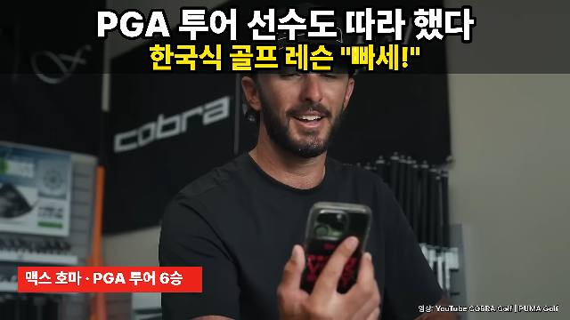 | 10~30초: 질문 자막 1줄("무슨 뜻이었을까요?")이 화면에 3초 이상 남게 둔다. 실명·연도·숫자 1개를 화면 텍스트로 강조. 채널 로고는 이 구간에 3~4초만. 컷은 2~3초 간격. |
| 30~60초 컷 밀도가 가장 높은 구간(세계열광 26컷/분, 국뽕특파원 36컷/분). 숫자 3~5개 연타 + 반전 문장 1개 + 목차 선언. | 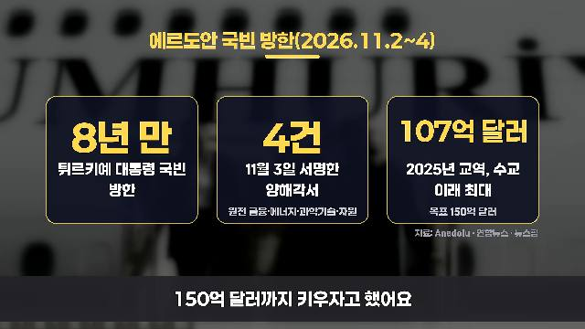 | 30~60초: 평균 컷 2초 이하. 숫자 카드 한 장에 숫자 3개까지, 내레이션이 숫자를 말하는 같은 초에 빈칸 → 큰 숫자로 채운다. 60초 안에 목차/핵심 질문을 자막 카드로 한 번 보여준다. |
| 화면 종류 배합 AI 일러스트형: AI 일러스트 100%(장면 45% + 고정 캐릭터 30~35% + 글자 소품 클로즈업 20~25%), 평균 2.8초. 해외방송형: 뉴스 b-roll 55% + 외국 방송 클립 27% + 정보·인용 카드 15%. 브이로그형: 외국인 셀카·워킹 45% + 풍경 35% + 생활 컷 12% + 댓글 카드 8%, 평균 1.8초. | 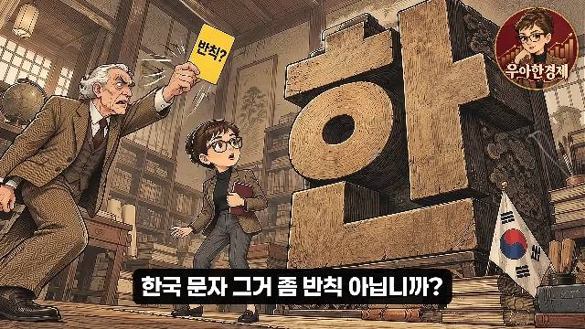 | 타입을 하나 정해 배합을 지킨다. 저작권 안전형(추천): 자체 AI 일러스트·지도·그래픽 60% 이상 + 외국 클립 30% 이하 + 인용·숫자 카드 10~15%. 한 장면 3~8초, 문장 하나에 1~2컷. |
| 자막 5편 모두 하단 중앙. 내레이터 = 흰색, 외국인 발언 번역 = 노랑. 한 줄 10~22자, 2~3초마다 교체. 키워드 별색은 거의 안 씀(썸네일·카드에서만). | 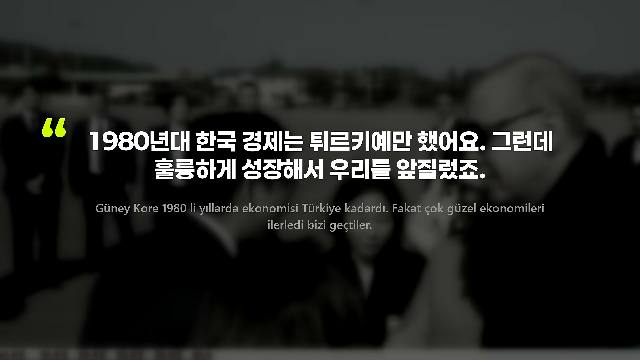 | 하단 중앙 고정. 내레이션 흰색(반투명 어두운 바 또는 검은 박스), 외국인 발언 노랑+검은 외곽선. 한 줄 최대 20자, 2줄 이내, 2~3초마다 교체. 시니어용으로 글자 크기는 화면 높이의 6% 이상. |
| 인용·댓글 카드 세계열광: 어두운 배경 + 금색 큰따옴표 + 흰 본문 2줄 + 작은 원문 1줄, 4~5초. 국뽕특파원: 우상단 둥근 댓글 카드 3~9초. 글로벌공감TV: 원본 UI 스크린샷 + 노랑 형광펜 8~12초. | 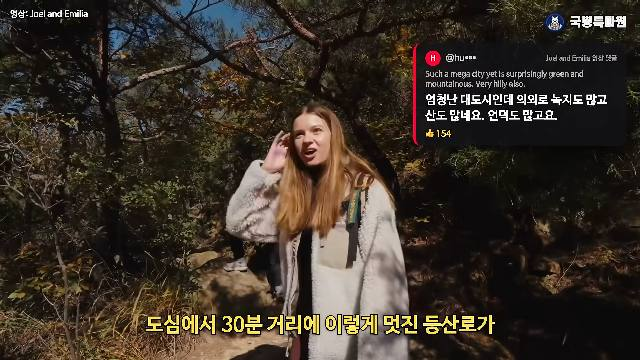 | 핵심 외국인 발언은 인용 카드로: 금색 큰따옴표, 본문 30자 이내 2줄, 아래 작은 원문 1줄, 4~5초. 댓글 카드에는 좋아요 수를 같이 표시. 영상당 인용 카드 3~5장. |
| 출처 라벨 세계열광: 좌상단 노랑 "출처: @채널" 클립 내내 유지. 국뽕특파원: 좌상단 "영상: 유튜버명". 글로벌공감TV: 우하단 작은 "영상: 플랫폼 @계정". 우아한 경제: 외부 클립 없음. | 외부 클립이 나오는 동안 좌상단에 "출처: 채널명(나라·플랫폼)" 라벨을 클립 끝까지 유지. 설명란에 원본 URL 전부. 단, 출처 표기는 허락이 아니다(공정 사용 안내). 사용 허락·라이선스 기록은 따로 보관. | |
| 원음 클립 길이 세계열광: 외국 방송 원음 12~22초 단위, 합계 약 210초(29%). 국뽕특파원·글로벌공감TV: 원음 5~14초 + 번역. 반대로 1위 코리아국뽕한사발은 방송 원본 1~2분 연속, 원음 80~85%. |  | 외국 원음 클립은 한 번에 20초 이하, 같은 원본은 영상 전체에서 합계 60초 이하. 클립 앞에 내레이션으로 "누가·왜"를 말하고, 클립 뒤에 핵심 한 줄 반복 + 해석. 원음 비율은 전체 30% 이하로. |
| 컷 템포 분당 컷: 세계열광 15.2, 우아한 경제 21.1·21.4, 글로벌공감TV 9.6, 국뽕특파원 33.6(1초 샘플 근사치). 1위 채널(번역형)은 24. | 기본 분당 20컷(평균 3초). 훅 30~60초 구간은 분당 30컷, 설명·인용 구간은 분당 12컷까지 낮춘다. 같은 b-roll을 5~6조각으로 나눠 돌려 쓰되 컷마다 다른 구간. | |
| 엔딩 5/5 오프닝 모티프 회수 1컷 + 질문 1개. 엔드카드 없음(글로벌공감TV는 로고 대칭). | 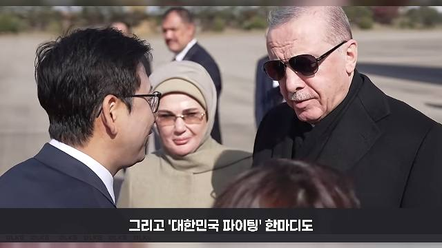 | 마지막 20초: 오프닝 첫 장면을 다시 1컷 → 질문 자막 1줄(댓글 유도) → 로고 또는 하늘·풍경 샷 3초. 구독 버튼 애니메이션은 넣지 않는다. |
| 썸네일 2줄 대형 텍스트(줄당 13~14자): 1줄 큰따옴표 인용문(흰·노랑), 2줄 이유(노랑·시안·초록). 숫자 3/5, "해외 반응" 라벨 3/5, 국기 2/5. 배경은 어둡게 눌러 글자 가독성 확보. | | 16:9, 2줄 텍스트(줄당 14자 이내). 1줄: 외국인 인용 큰따옴표(흰/노랑, 검은 외곽선). 2줄: 이유·숫자(노랑/시안). 오른쪽 위 국기 배지 또는 "해외 반응" 라벨. 놀란 얼굴은 내가 촬영했거나 AI로 만든 이미지만(방송 캡처 X). |
0~90초 실제 타임라인 ① 세계열광 (에르도안 방한, 43.5만)
| 구간 | 화면 | 샷 | 화면 글자 | 목적·어그로 |
|---|---|---|---|---|
| 0:00-0:18 | 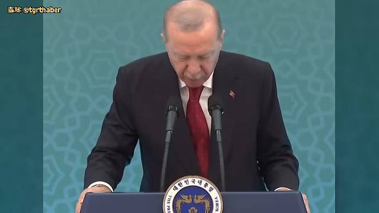 | 튀르키예 공동기자회견 연단의 에르도안 중앙 풀프레임, 무컷 18초 (정지에 가까운 한 샷, 가끔 얼굴만 들어 올림) | 노란 소형 번역자막(하단 중앙, 검은 외곽선): "이 자리에서 양국 관계에 기여해 주신 데 대해 / 감사의 말씀을 드리고 싶습니다 / (한국어로) 감사합니다 / (웃음, 박수)" | 훅: 영상 맨 끝(11:24 회수)에 나올 한국어 한마디 "감사합니다"를 맨 앞으로 당겨 보여줌 한국어 "감사합니다" 반전 + 웃음·박수 자막 |
| 0:19-0:29 | 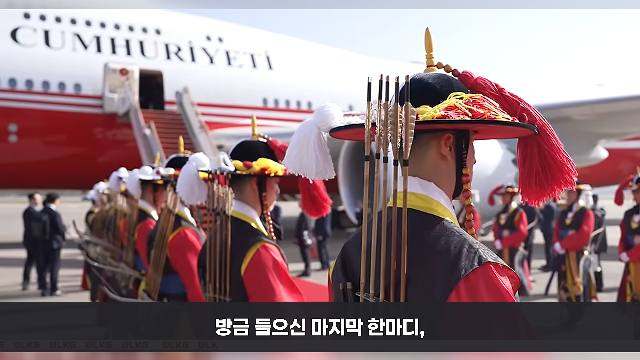 | 환영식 b-roll: 튀르키예 대통령 전용기 앞 의장대(깃털 모자) 클로즈업 → 서울공항 의장대 → 태권도 시범 (컷 약 2-3초 간격) | 하단 어두운 반투명 바 + 흰 자막: "방금 들으신 마지막 한마디," / "튀르키예 대통령이 서울의 기자회견을 / 이 말로 맺은 겁니다" / "그런데 튀르키예 방송과 해설가들 입에서는" | 긴장: 방금 들은 한마디의 의미 설명 + 다음 문장 지연 질문형 예고 |
| 0:29-0:35 | 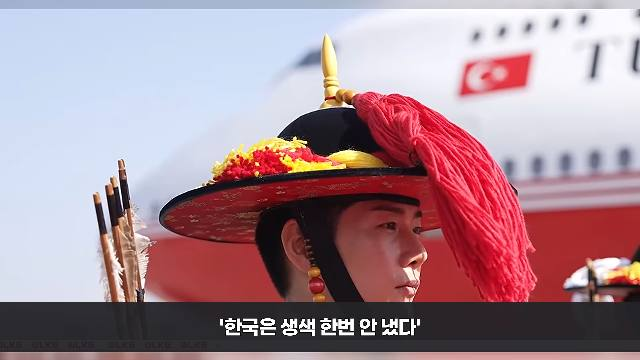 | 금색 갓 의장대 / 깃털 모자 클로즈업, 서울공항 와이드 | 자막: "더 놀라운 말이 나왔습니다" / "'한국은 생색 한번 안 냈다'" / "무슨 뜻이었을까요?" | 약속: 핵심 인용구를 자막 한 줄로 노출하고 뜻을 질문으로 남김 (큰 인용카드 아님) 금지어/인용부호 문장 + 질문 |
| 0:35-0:42 | 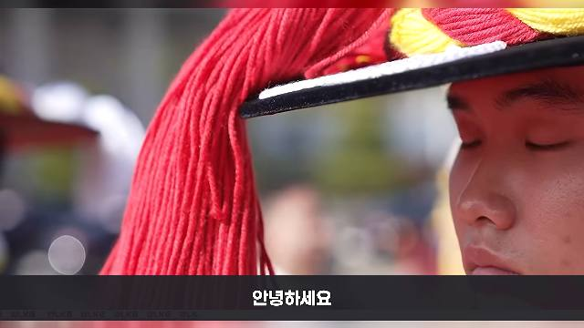 | 의장대 모자 술 클로즈업 2컷, 이어서 숲속 태권도 시범 원경 | 자막: "안녕하세요" / "에르도안 튀르키예 대통령의 한국 방문이에요" / "여러분, 6·25 전쟁 때" | 인사 + 주제 선언 (오프닝 인사를 35초 뒤에 배치) none |
| 0:42-0:53 | 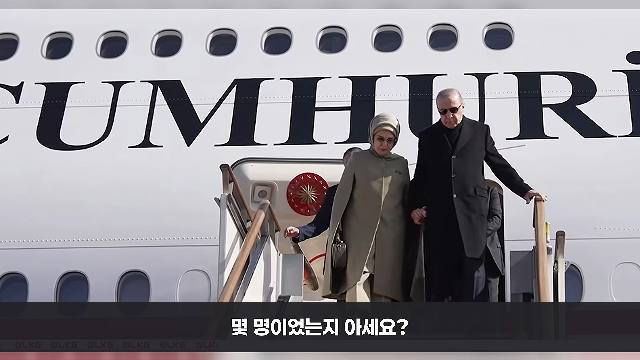 | 전용기 계단 하차(에르도안 부부), 태권도 시범 원경, 격파 시범 (b-roll 반복) | 자막: "튀르키예가 우리 땅에 보낸 장병이 / 몇 명이었는지 아세요?" / "2만 1,212명이에요" / "그런데 정작 흥미로운 건" / "76년이 지난 지금," | 숫자 + 질문 (퀴즈형 숫자 공개) 숫자(21,212명) + 질문 |
| 0:53-1:02 | 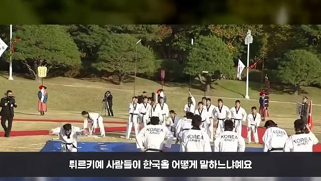 | 태권도 시범 + 전용기 계단 + 선글라스 쓴 에르도안과 인사하는 한국 인사 클로즈업 | 자막: "튀르키예 사람들이 한국을 어떻게 말하느냐예요" / "오늘은 튀르키예 방송이 왜 이번 방문에 들떴는지," / "해설가들이 꼽은 한국은 어떤 나라인지," / "그리고 아직 남은 숙제까지 짚어 볼게요" | 약속: 3가지 목차를 한 문장으로 (칭찬 2 + 숙제 1) 반전 암시("아직 남은 숙제") |
| 1:02-1:05 | 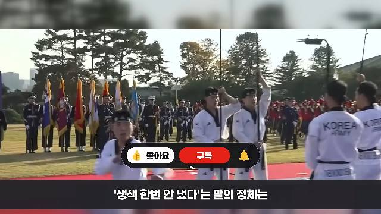 | 태권도 시범 클로즈업, 하단에 '좋아요/구독/알림' 버튼 애니메이션(커서가 구독 클릭) 3초 | 하단 바 자막: "'생색 한번 안 냈다'는 말의 정체는" / "조금 뒤에 밝혀 드릴게요" | 지연(클리프행어) + 구독 유도를 같은 구간에 겹침 질문/지연 |
| 1:06-1:15 | 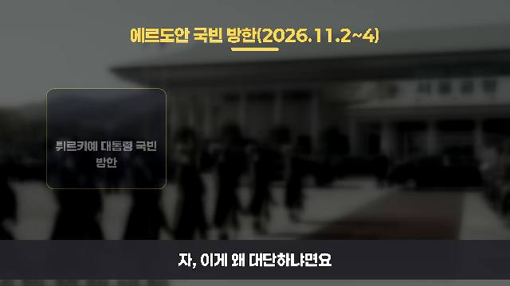 | b-roll을 어둡게 블러 처리한 배경 위 정보카드 3장(네이비 카드, 금색 테두리, 상단 금색 제목 "에르도안 국빈 방한(2026.11.2~4)" 밑줄) | 카드1 "8년 만 / 튀르키예 대통령 국빈 방한", 카드2 "11월 3일 서명한 양해각서 / 원전·금융·에너지·과학기술·자원", 카드3 "2025년 교역, 수교 이래 최대 / 목표 150억 달러"; 카드 우하단 작은 출처 "자료: Anadolu·연합뉴스 등" | 숫자: 핵심 수치를 금색 대형 숫자로 단계 등장 (빈 카드 → 숫자 채움) 숫자 8년 만 |
| 1:15-1:29 | 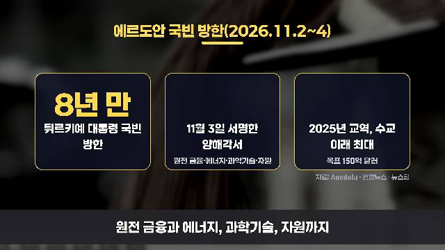 | 같은 정보카드 유지, 카드 상단 숫자가 나레이션 시점에 맞춰 순서대로 교체: 8년 만(75s) → 4건(78s) → 107억 달러(81-84s) | 금색 숫자 "8년 만" "4건" "107억 달러", 하단 자막 "원전 금융과 에너지, 과학기술, 자원까지" / "양해각서 4건에 서명했어요" / "107억 달러," / "수교 이래 가장 많았고요" / "150억 달러까지 키우자고 했어요" | 숫자 3연타 (나레이션과 같은 초에 숫자 표시) 숫자 3개 연속 |
| 1:29-1:30+ | 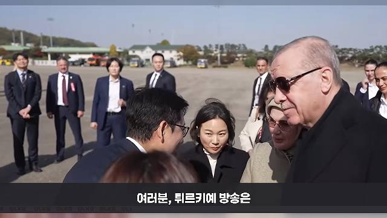 | 에르도안이 한국 인사와 인사하는 클로즈업 (b-roll), 다음 구간 CNN TÜRK 연결 예고 | 하단 자막 "여러분, 튀르키예 방송은" | 전환: 1막(도입) → 2막(방송 클립) 질문 |
0~90초 실제 타임라인 ② 국뽕특파원 (외국인 등산객, 24.4만)
| 구간 | 화면 | 샷 | 화면 글자 | 목적·어그로 |
|---|---|---|---|---|
| 0:00-0:03 | 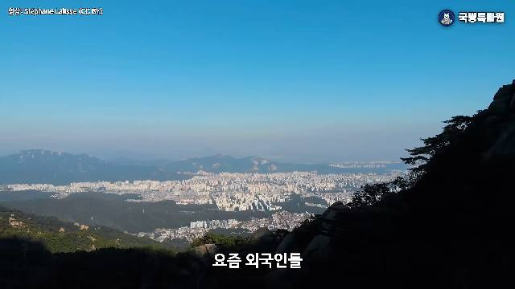 | 서울 시내 항공 전경에서 북한산 암벽 원경으로 이어지는 와이드 샷 2컷 | 하단 중앙 흰색 소형 자막 "요즘 외국인들" / 우상단 소형 채널 로고 "국뽕특파원"(0:00부터 상시) | 훅: 말을 "인용 예고"로 시작 질문형 예고(이런 말을 한답니다) |
| 0:04-0:05 | 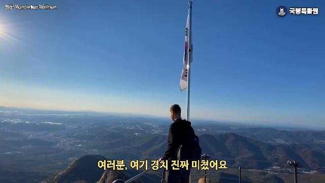 | 태극기가 휘날리는 정상, 사람 뒷모습 | 노랑 자막 "여러분, 여기 경치 진짜 미쳤어요"(외국인 발언 번역) | 인용: 감탄 한마디 감탄 인용 |
| 0:06-0:07 | 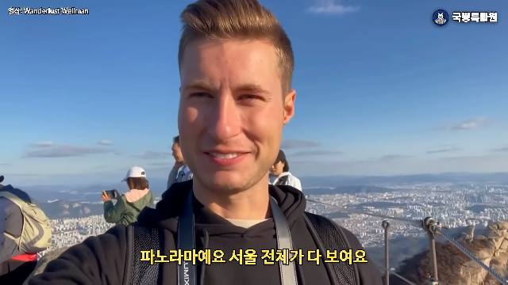 | 금발 남성 유튜버 셀카, 정상 파노라마 | 노랑 자막 "파노라마에 서울 전체가 다 보여요" | 인용: 감탄 2 감탄 |
| 0:08-0:11 | 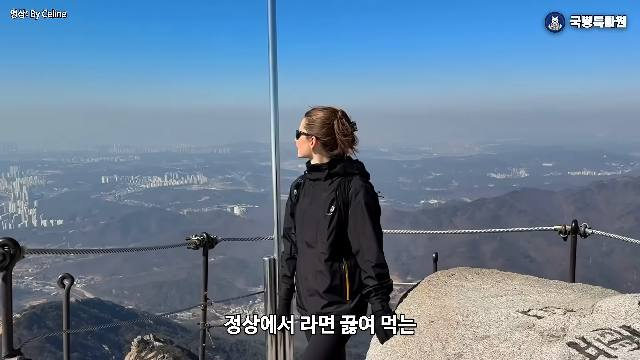 | 검정 재킷 여성이 철제 난간 정상에서 이야기, 선글라스 낀 클로즈업 | 흰 자막 "정상에서 라면 끓여 먹는" "한국 사람들을 보고는요" | 약속: 놀라움의 이유(라면) 소재 키워드 "정상 라면" |
| 0:12-0:13 | 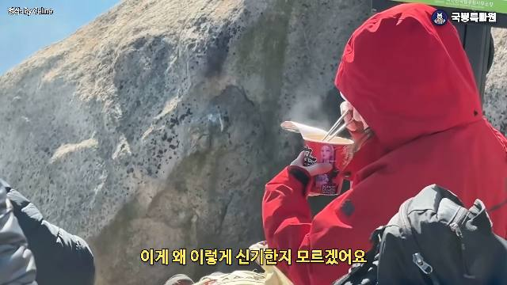 | 빨간 후드 등산객이 정상에서 컵라면을 먹는 클로즈업(김 모락) | 노랑 자막 "이게 왜 이렇게 신기한지 모르겠어요" (외국인 발언) | 인용: 반응 한마디 웃음/신기함 인용 |
| 0:14-0:17 | 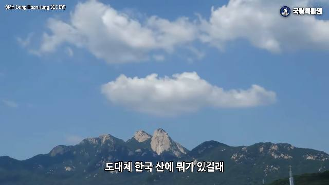 | 구름 + 북한산 원경 2컷 | 흰 자막 "도대체 한국 산에 뭐가 있길래" "외국인들이 이렇게 난리일까요?" | 질문: 영상 핵심 질문 선언 (13-17초) 질문 "난리" |
| 0:18-0:21 | 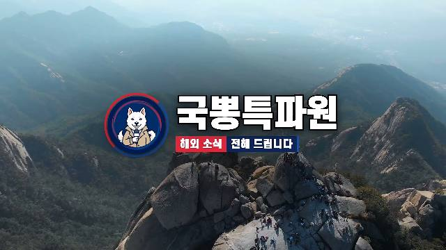 | 북한산 드론 항공 샷 위 중앙 대형 로고 카드 "국뽕특파원 / 해외 소식 전해 드립니다"(약 3초) → 하단 자막으로 교체 | 로고 카드(중앙) / 자막 "해외 소식 전해 드리는 국뽕특파원입니다." | 브랜딩: 질문 직후 인사/채널명 none |
| 0:24-0:26 | 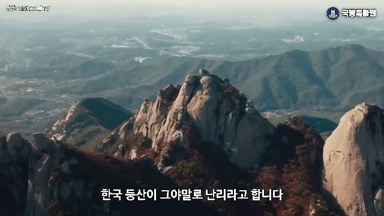 | 북한산 암봉 드론샷(색 보정, 깊이감) | 자막 "한국 등산이 그야말로 난리라고 합니다" | 설정 none |
| 0:27-0:28 | 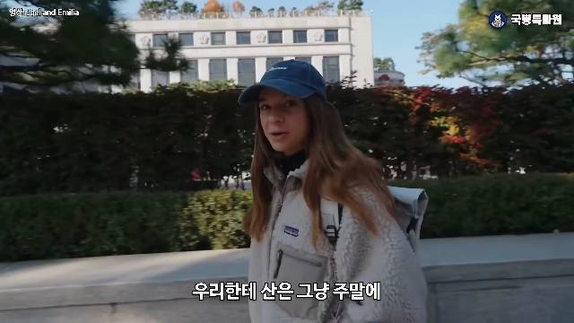 | 검은 배경 + 서울 도시 흐린 배경 위 중앙 흰색 대형 카드 문구 "주말 뒷산이 관광 코스가 됐다"(약 2초, 챕터 타이틀) | "주말 뒷산이 관광 코스가 됐다" | 구조: 챕터 1 시작 카드 (설명란 0:26 챕터) 역설 문장 |
| 0:28-0:36 | 서울 거리 외국 여성 보행, 북촌 한옥 골목, 서울 하이킹 관광센터 안, 파전·막걸리 식사 커플, 땀 흘린 두 외국 여성 간식 (생활 클립 5컷, 2-3초) | 하단 흰 자막 "우리한테 사는 그냥 주말에" "가는 동네 뒷산이잖아요" "지하철 타고 와서 올랐다가 내려와서" "파전 한 잔 먹고 오는 곳이죠" | 공감: 한국인 일상으로 하강 생활 공감 | |
| 0:37-0:49 | 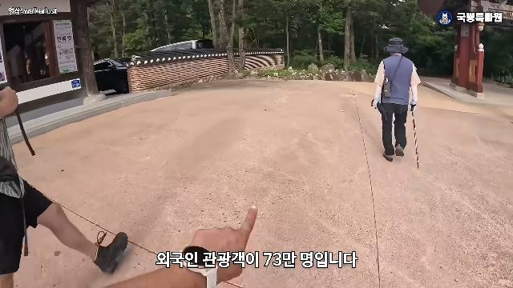 | 등산로 입구 보행 시점(GoPro) → 정상 능선 → 정상 셀카 → 단체 등산객 → 단풍 클로즈업(3컷 이상 같은 장면 반복) | 하단 흰 자막 "외국인 관광객이 73만 명입니다" "작년 같은 기간 61만 명에서" "작년엔 국내에 사는 외국인까지" "합쳐 200만 명 넘는 외국인이 국립공원을 찾았는데" "그 전해의 두 배 넘는 숫자였습니다" (숫자는 자막으로만, 그래픽 없음) | 숫자: 73만 → 61만 → 200만 (3연속) 숫자 연타 |
| 0:50-0:57 | 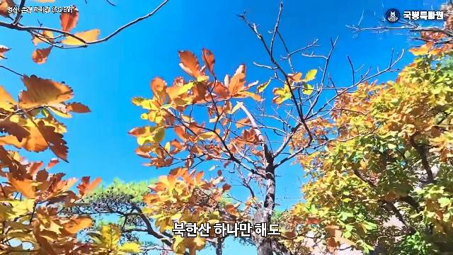 | 단풍 클로즈업 → 북한산 암봉 → 금발 남성 셀카 | 자막 "북한산 하나만 해도" "한 해 750만 명이 오르는" "우리나라에서 가장 붐비는 국립공원이고요." | 숫자: 750만 숫자 |
| 0:58-1:05 | 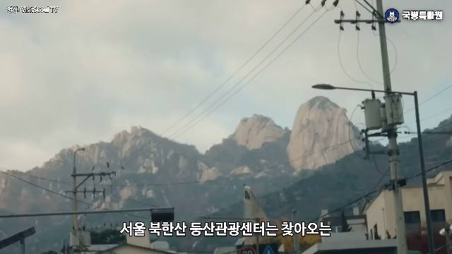 | 북한산 봉우리 + 전선(길거리) → 하이크 서울 관광센터 건물 외관, 가리키는 손 | 자막 "서울 북한산 등산관광센터는 찾아오는" "사람 10명 중 7명이 외국인이라고 하고요" "명동에서 쇼핑하던 관광객들이 이제는" | 숫자 + 반전(쇼핑 → 등산) 숫자 + 반전 |
| 1:06-1:13 | 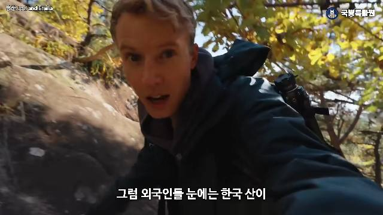 | 금발 남성 유튜버 하이킹 셀카 3컷 → 서울 한복판 정상 → 북한산 원경 | 자막 "그럼 외국인들 눈에는 한국 산이" "뭐가 그렇게 특별했을까요?" "먼저 서울 한복판에서 산을 처음 만난" "유튜버 커플의 반응부터 들어보시죠" | 전환: 숫자 설명 → 첫 번째 리액션 클립 소개 질문 + 리액션 예고 |
| 1:15-1:21 | 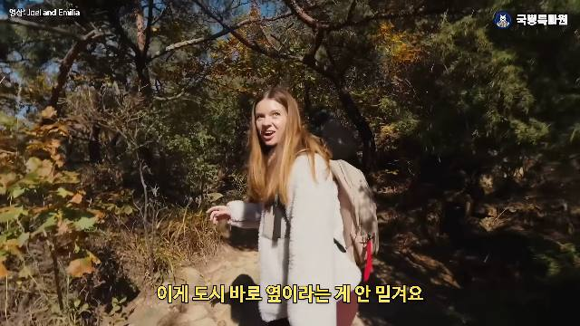 | 금발 여성 하이킹 셀카 (원음) 노랑 번역 자막, 1:18에 우상단 유튜브 댓글 카드 슬라이드 인 | 노랑 자막 "이게 도시 바로 옆이라는 게 안 믿겨요" "도심에서 30분 거리에 이렇게 멋진 등산로가" "있는 곳은 세계 어디에도 없을 거예요" / 우상단 댓글 카드(영어 원문 + 굵은 흰 한글 번역 + 좋아요 154) | 리액션: 외국인 본인 목소리 + 시청자 댓글 중첩 감탄 + 댓글 인용 |
| 1:24-1:30 | 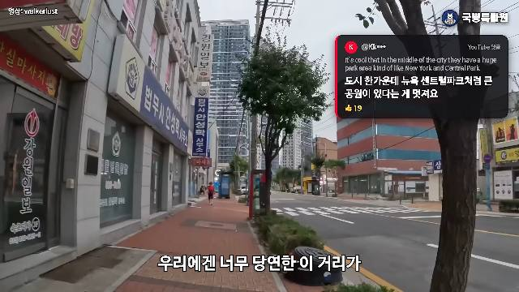 | 도심 거리/버스 안 콜롬비아 여행객 → 서울 전경 항공 | 하단 흰 자막 "도심에서 30분. 우리에겐 너무 당연한 이 거리가 외국인에겐 믿기지 않는 일입니다" "콜롬비아에서 온 한 여행객은 한국에선 지하철만 타면 …" / 우상단 댓글 카드 지속 | 요약: 한국인 시선으로 의미 번역 공감 + 비교 |
0~90초 실제 타임라인 ③ 우아한 경제 (두산, 40.7만)
| 구간 | 화면 | 샷 | 화면 글자 | 목적·어그로 |
|---|---|---|---|---|
| 0:00-0:04 | 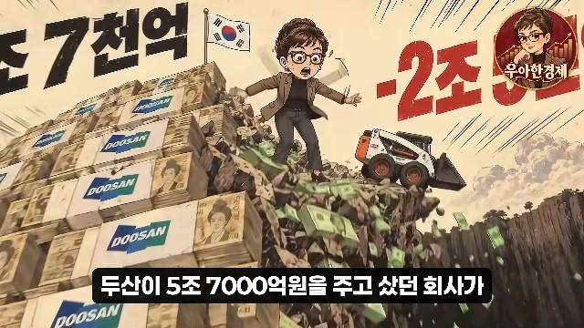 | AI 만화풍(세피아 만화 톤) 일러스트: 두산 돈다발 산더미 위에서 안경 쓴 호스트 캐릭터가 밥캣 로더를 밀어 절벽 아래로 지폐가 쏟아짐. 같은 장면을 5컷 연속 미세 변화(손·돈·구름 이동) | 일러스트에 구워진 거대 숫자 "5조 7천억"(검정) + "-2조 5천"(빨강) / 하단 중앙 검은 둥근 박스 흰 자막 "두산이 5조 7000억원을 주고 샀던 회사가" "2년 만에 2조 5000억원을 까먹었습니다" | 훅: 큰 숫자 2개(투입 vs 손실) 충돌을 첫 4초에 숫자 충돌 + 추락 이미지 |
| 0:05-0:11 | 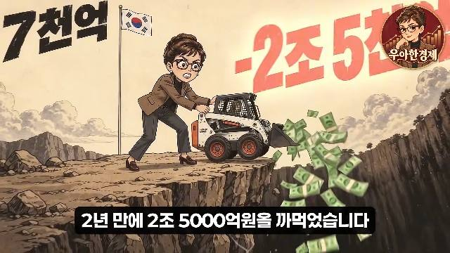 | 지하철 안 군중이 신문 "승자의 저주"를 보며 놀라는 표정 클로즈업 (우상단 채널 아바타 로고 워터마크는 0:01부터) | 신문 헤드라인 "승자의 저주"(일러스트 내 텍스트) + 하단 자막 "세간에서는 이 인수를" "'승자의 저주'라고 불렀을 정도죠" | 긴장: 부정적 별칭 제시 금지어/부정어 "저주" |
| 0:11-0:17 | 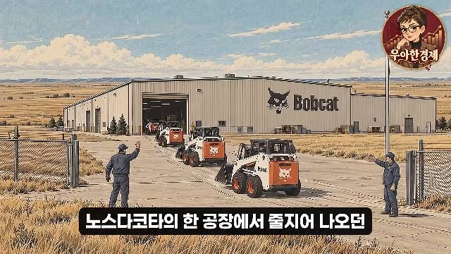 | 노스다코타 밥캣 공장 와이드(황량한 평원, 노동자가 장비 인도) | 자막 "노스다코타의 한 공장에서 줄지어 나오던" "흰색과 주황색 작은 장비" | 설정: 상품 소개 (호기심) none |
| 0:18-0:26 | 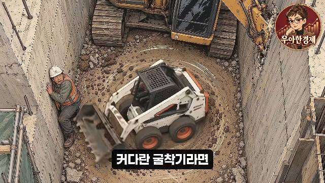 | 좁은 콘크리트 구덩이 안에서 제자리 회전하는 밥캣 로더(탑뷰, 컷 간 미세 회전), 작업자 | 자막 "커다란 굴착기라면" "몇 번씩 앞뒤로 움직여야 할 좁은 틈에서" "이 장비는 제자리에서 몸을 휙 돌려버려요" | 설명: 장비 특징(훗날 엔딩과 연결되는 반복 모티프) none |
| 0:27-0:35 | 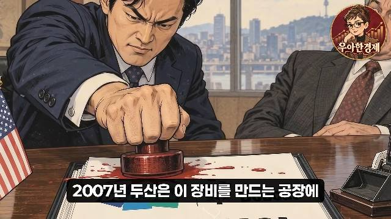 | 회의실 계약 장면: 남자가 붉은 인주 도장을 쾅 찍는 클로즈업(피처럼 튀는 인주), 태극기·성조기·밥캣 모형 | 계약서에 "DOOSAN / Bobcat", "5조 7천억" / 자막 "2007년 두산은 이 장비를 만드는 공장에" "그 당시 해외 인수합병 역대 최고액" "5조 7천억 원을 베팅했죠" | 숫자 반복(5조 7천억 재등장) + 드라마틱 과장 숫자 + 충돌(도장 쾅) |
| 0:36-0:41 | 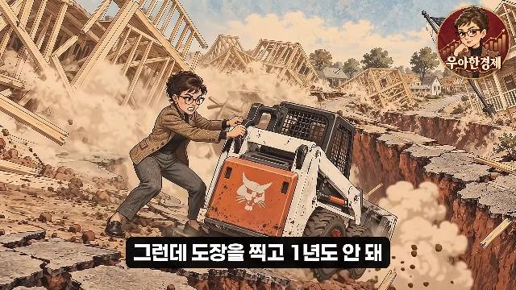 | 호스트 캐릭터가 갈라지는 땅에서 로더를 필사적으로 미는 장면, 무너지는 주택 (먼지·파편) | 자막 "그런데 도장을 찍고 1년도 안 돼" "미국 주택시장이 통째로 무너졌습니다" | 반전/위기 붕괴 이미지 |
| 0:42-0:48 | 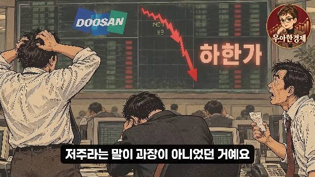 | 증권 트레이더 머리 감싼 컷 + 하한가 붉은 화살표 → 폐허 위 빛줄기 속 로더 | 일러스트 속 "하한가" / 자막 "저주라는 말이 과장이 아니었던 거예요" "자 근데요" "여기서 이상한 점이 하나 있습니다" | 반전 예고(이상한 점) 질문/반전 예고 |
| 0:49-0:58 | 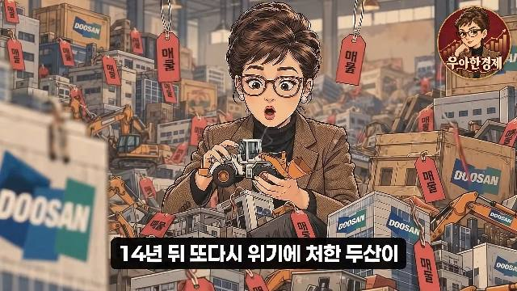 | 호스트(안경 단발 여성 캐릭터)가 "매물" 꼬리표 달린 두산 건물·장비 더미를 들고 놀란 표정 3컷 → 금고 복도에 밥캣을 밀어넣는 직원, "매물 목록" 서류 | 꼬리표 "매물"(일러스트), 자막 "14년 뒤 또다시 위기에 처한 두산이" "그룹을 쪼개서 팔아야 했을 때" "가장 먼저 내놓을 것 같던 이 회사가" "매물 목록에 없었거든요" | 긴장: 모순 제시(왜 안 팔았나) 반전/의문 |
| 0:59-1:04 | 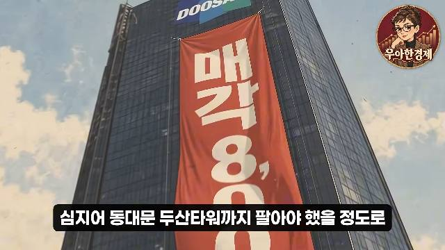 | 두산타워 빌딩에 붉은 현수막 "매각 8,000억" 걸린 모습, 올려다보는 시민 (줌인 → 현수막 클로즈업) | 현수막 "매각 8,000억"(일러스트), 자막 "심지어 동대문 두산타워까지 팔아야 했을 정도로" "돈이 급했던 상황에서 말이죠" | 숫자 + 긴장 극대화 숫자 8,000억 |
| 1:05-1:09 | 호스트가 로더 앞에서 "5조 7천억" 푯말과 거대한 "19년" 붉은 숫자 앞에 서 있는 샷(2컷 클로즈업) | 일러스트 속 "19년", 푯말 "5조 7천억", 자막 "도대체 두산은 왜 이 회사를 샀고" "왜 아직도 팔지 않은 걸까요?" | 약속: 핵심 질문을 영상 전체의 질문으로 제시 (1:08 질문 완성) 질문 + 숫자 "19년" | |
| 1:10-1:15 | 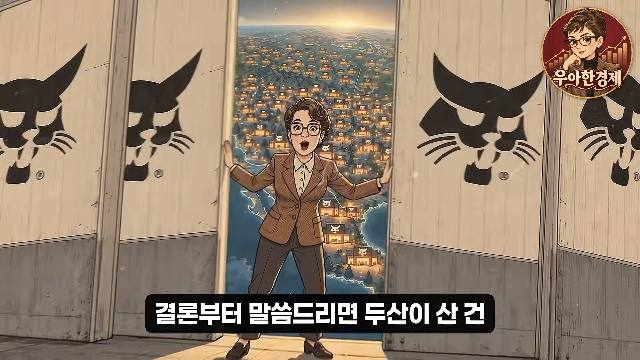 | 호스트가 "Bobcat" 로고 문을 열자 북미 지도 위 딜러망 불빛이 펼쳐지는 샷(줌아웃) | 자막 "결론부터 말씀드리면 두산이 산 건" "단순한 공장이 아니었습니다" | 약속: 결론 선공개 결론 선공개 |
| 1:16-1:19 | 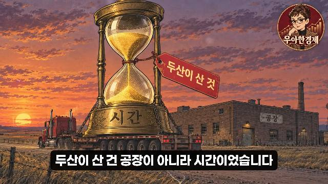 | 황금빛 모래시계(태그 "두산이 산 것", 받침 "시간")와 노을 공장 | 일러스트 속 태그 "두산이 산 것", "시간", "공장" / 자막 "두산이 산 건 공장이 아니라 시간이었습니다" | 핵심 한 줄 (영상의 thesis) 역설 문장 |
| 1:20-1:29 | 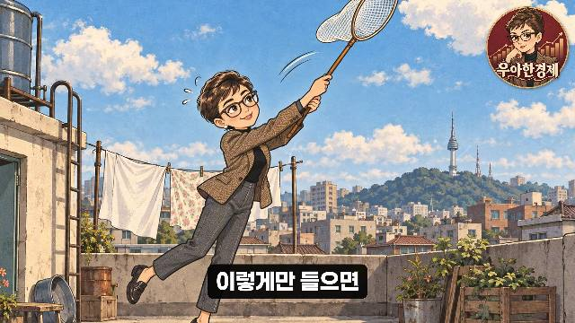 | 호스트가 잠자리채로 구름 잡는 컷 → 땅속 '2007' 보물상자 → 신문 "2007년 두산, 밥캣 인수" 가판대 | 일러스트 속 헤드라인 "2007년 두산, 밥캣 인수" / 자막 "이렇게만 들으면" "그런데 이건 나중에 붙인 해석이 아닙니다" "2007년 이 인수를 지휘한 박용만이" "처음부터 그렇게 말했거든요" | 근거 제시(인물 이름) none |
편집 프롬프트 (복사해서 사용)
[역할] 너는 40~80대 대상 '해외반응·국뽕' 롱폼 편집자다. 대본 표(타임코드·내레이션·화면 지시·출처)를 받으면 아래 규칙으로 편집 지시서(초 단위 컷 리스트)를 만든다.
[소스 규칙 - 저작권 안전형]
- 화면의 60% 이상은 자체 제작(AI 일러스트·지도·인포그래픽·직접 촬영·라이선스 스톡).
- 외국 원음 클립은 한 번 20초 이하, 같은 원본은 영상 전체에서 합계 60초 이하, 전체 원음 비율 30% 이하.
- TV 방송사 영상(Content ID 등록 가능성 큼), 스포츠 중계, 영화·드라마 장면은 허락 없이는 쓰지 않는다.
- 외부 클립이 나오는 동안 좌상단에 "출처: 채널명(나라·플랫폼)" 라벨을 유지하고, 설명란에 원본 URL을 모두 적는다.
[오프닝]
0~3초: 영상에서 가장 센 한 장면을 맨 앞으로(외국인의 한국어 한마디 / 놀란 표정 / 숫자 충돌 그래픽). 같은 문장을 하단 자막으로. 이 장면은 엔딩에서 한 번 더.
3~10초: 무컷 유지 또는 1~2초 급속 컷 중 하나만.
10~30초: 질문 자막 1줄을 3초 이상 유지. 실명·연도·숫자 1개를 텍스트로 강조. 채널 로고 3~4초.
30~60초: 평균 컷 2초 이하. 숫자 카드(숫자 3개까지)를 내레이션과 같은 초에 채운다. 60초 안에 목차 자막 카드 1장.
[본론]
기본 분당 20컷(평균 3초), 인용·설명 구간은 분당 12컷까지. 문장 하나에 1~2컷.
외국인 발언: 노랑 자막 + 검은 외곽선. 핵심 발언은 인용 카드(금색 큰따옴표, 본문 30자 이내 2줄, 원문 1줄, 4~5초). 영상당 3~5장.
댓글: 우상단 둥근 카드 3~9초, 좋아요 수 표시.
블록 전환마다 번호 타이틀 카드 2초("두 번째 이야기").
같은 b-roll은 5~6조각으로 나눠 돌려 쓰되 매번 다른 구간.
[자막] 하단 중앙. 내레이션 흰색(어두운 반투명 바), 한 줄 최대 20자, 2줄 이내, 2~3초마다 교체. 글자 크기는 화면 높이의 6% 이상(시니어 가독성).
[엔딩] 마지막 20초: 오프닝 첫 장면 1컷 → 질문 자막 1줄 → 로고/풍경 3초. 구독 애니메이션 없음.
[썸네일] 16:9, 2줄(줄당 14자 이내). 1줄 외국인 인용 큰따옴표(흰/노랑), 2줄 이유·숫자(노랑/시안). 국기 배지 또는 "해외 반응" 라벨. 인물 사진은 직접 촬영·AI 생성·라이선스 이미지만.
[출력] 표: 시작~끝(초) | 화면 소스(자체/외부+출처) | 샷 설명 | 화면 글자(자막/카드) | 효과(줌·형광펜·숫자 채우기) | 원음 사용(초). 마지막에 "외부 원음 합계 n초 / 전체의 n%"를 계산해 적는다.
편집자에게 요구할 것 (요청서 체크리스트)
| 항목 | 요구 내용 |
|---|---|
| 소스 목록 | 사용한 모든 외부 클립의 원본 URL·사용 구간(초)·허락/라이선스 여부 표. 원음 합계 초와 비율(30% 이하) 계산 |
| 오프닝 | 0~3초 가장 센 장면(엔딩에서 재사용), 10~30초 질문 자막 3초 이상, 30~60초 컷 2초 이하 + 숫자 카드 |
| 자막 | 내레이션 흰색 / 외국인 노랑 외곽선, 한 줄 20자 이내, 화면 높이 6% 이상 크기 |
| 카드 | 인용 카드 3~5장(금색 따옴표, 30자 이내), 숫자 카드(3개 이내, 내레이션과 같은 초), 블록 번호 카드 |
| 출처 라벨 | 외부 클립마다 좌상단 라벨 유지, 설명란 URL 전부 |
| 금지 | TV 예능·드라마·스포츠 중계 장면 무단 사용, 원본 회차 1~2분 연속 사용, 다른 나라 비하 자막, 허구 사연을 실화처럼 보이게 하는 배경 영상 |
| 납품물 | 최종 영상 + 컷 리스트(초 단위) + 소스·라이선스 표 + 썸네일 2안(2줄, 줄당 14자) |
한계: 채널 실제 수익 창출 여부·신고 이력·시청지속률은 외부에서 볼 수 없어 UNKNOWN입니다. 원본 대조는 화면·설명란 근거이며, phFB016Q528 원본은 찾지 못했습니다. 대본 인용은 유튜브 자동자막(오인식 일부 보정)입니다.